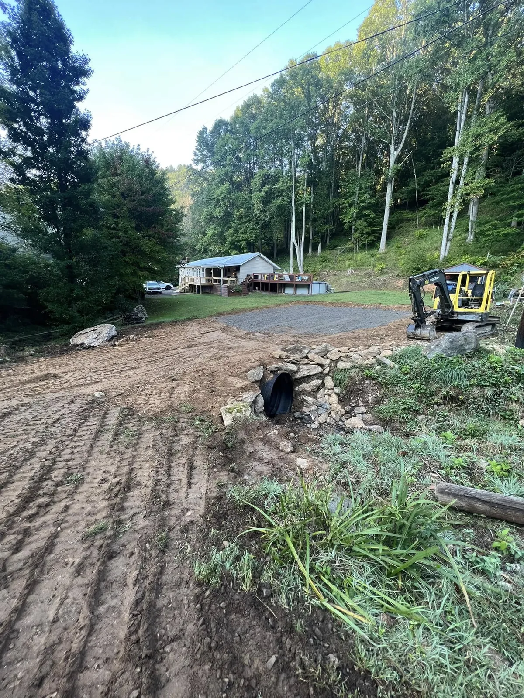
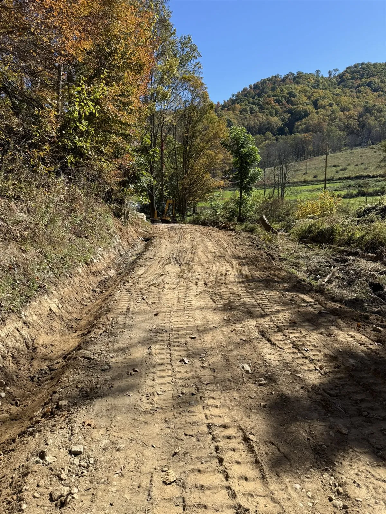
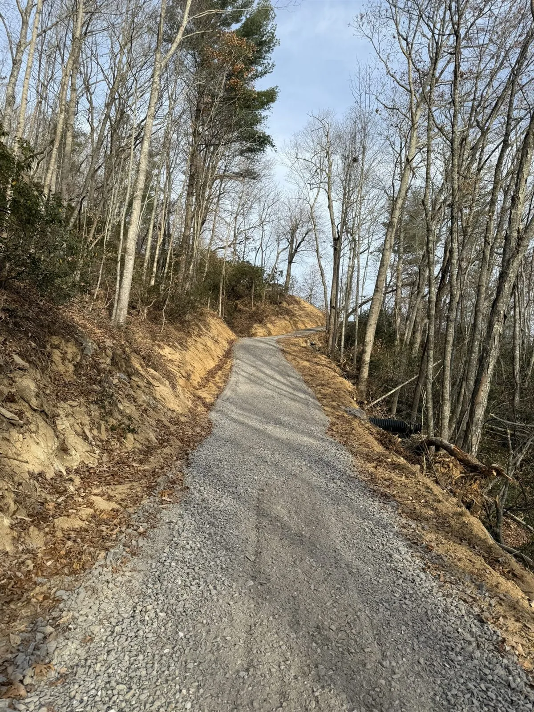
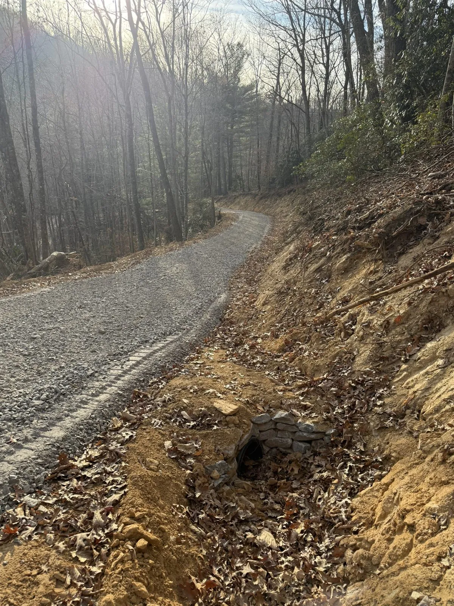

New Driveway & Access Road Cuts
We lay out and cut in new driveways, private drives, and access roads, shaping the route and the grade so equipment and your vehicles can reach the site.
New driveways and access roads built to hold, plus repairs for washed-out mountain drives. Grading, base and gravel, culverts, and ditching across Yancey, Mitchell, Avery, and the surrounding WNC counties.

A good driveway in the mountains is more than a load of gravel. It is built from the ground up: a stable subgrade, a compacted base course, final grading with the right crown and slope, and the ditches and culverts that move water off the surface instead of down it. Get the water right and the drive holds. Get it wrong and it washes.
We build and repair access roads, private drives, parking areas, and internal roadways across Western NC. Because we self-perform the grading, the drainage, and the base work with one crew, the whole drive is handled by people who are accountable for how it holds up, not split across contractors who each blame the other.
From a new access road cut to rebuilding a drive that has washed out, handled by one crew that knows mountain ground.
We lay out and cut in new driveways, private drives, and access roads, shaping the route and the grade so equipment and your vehicles can reach the site.
A compacted base course and the right gravel, graded with proper crown and slope so the surface sheds water and stands up to traffic.
Driveway and cross-drain culverts sized for the water off the slope, set with rock headwalls so the inlet and outlet hold and do not erode.
Ditches and swales cut alongside the drive to catch runoff and carry it away, so water never gets the chance to run down the surface.
Rutted, washed-out, or storm-damaged drives rebuilt from the base up, with the drainage to keep the next hard rain from undoing the work.
Level, well-drained parking areas, turnarounds, and internal roadways graded and graveled so they stay firm and usable in wet weather.

Mountain drives wash out for one reason: water runs down the surface instead of off of it. Patching the ruts with gravel just feeds the next washout. We fix the cause. The drive above started as a washed-out access road and was rebuilt with stone, a proper base, and the drainage to keep it intact.
We re-establish the subgrade, base, grade, and crown, so the repair is a road that holds, not a load of gravel that disappears.
Ditches, culverts, and rock headwalls sized to actually move the water, so the surface stays put through the next storm.
A licensed commercial GC on the job, not a one-truck outfit. You deal with the owner and one crew, start to finish.




Yes. We cut in new driveways, private drives, and access roads from the subgrade up: clearing the route, shaping the grade, setting drainage, and laying a compacted base and gravel so the surface holds. On steep mountain ground we plan the grade and the water so the drive is usable year round, not just on a dry day.
Yes, and it is steady work up here. Mountain drives wash out when water runs down the surface instead of off of it. We rebuild the drive with a proper compacted base, re-establish the grade and crown, and add the ditching and culverts that carry water away. The goal is a repair that holds, not a load of gravel that disappears in the next hard rain.
Yes. We set driveway and cross-drain culverts sized for the water that actually comes off the slope, and we build rock headwalls so the inlet and outlet hold and do not erode. Done right, the culvert moves water under the drive instead of across it, which is what keeps the surface from washing.
It depends on the length, the slope, how much base and gravel the ground needs, and what drainage has to go in. A short drive on stable ground is a very different job from a long, steep mountain access road with culverts and ditching. The honest way to price it is to walk the site with you. We quote after seeing the ground.
Tell us about the drive and the access. We'll get back fast.